18 images
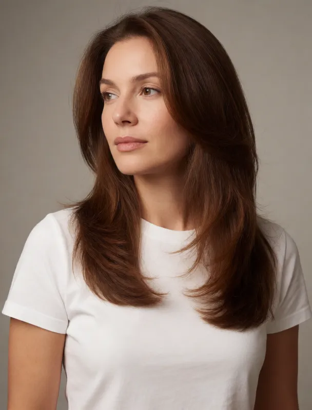
krea 2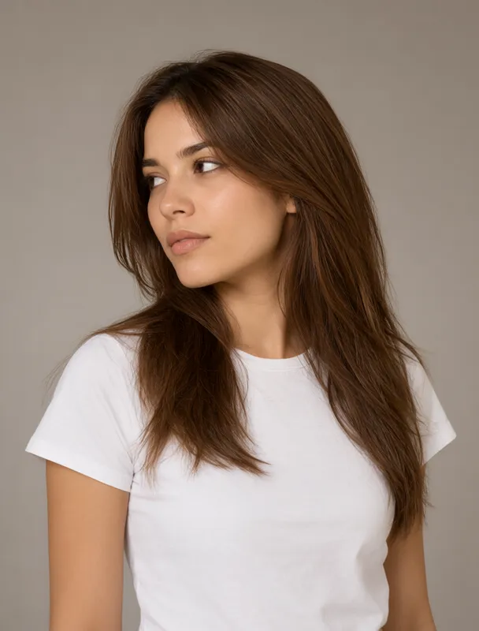
qwen image 2.1a full color studio portrait photograph in three-quarter view, framed from the shoulders up, lit by a soft diffused key light against a plain warm gray backdrop. the subject is a mixed race woman aged 20 with light skin. her hair is chestnut brown, long blowout layers. she wears a plain white crew-neck t-shirt. she is turned three quarters toward the left side of the frame and gazes off to the left side of the frame, away from the camera.
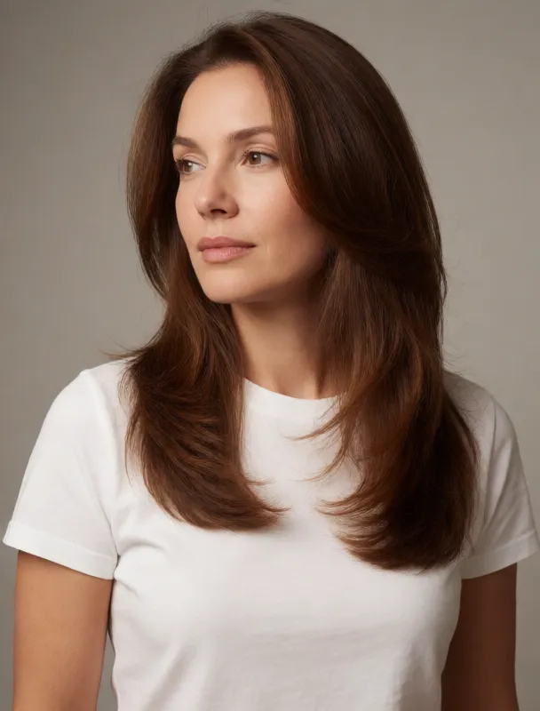
krea 2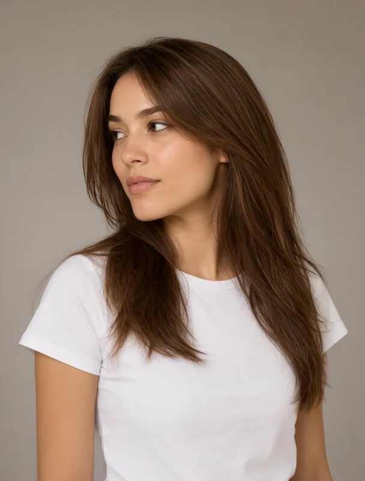
qwen image 2.1a full color studio portrait photograph in three-quarter view, framed from the shoulders up, lit by a soft diffused key light against a plain warm gray backdrop. the subject is a mixed race woman aged 25 with light skin. her hair is chestnut brown, long blowout layers. she wears a plain white crew-neck t-shirt. she is turned three quarters toward the left side of the frame and gazes off to the left side of the frame, away from the camera.
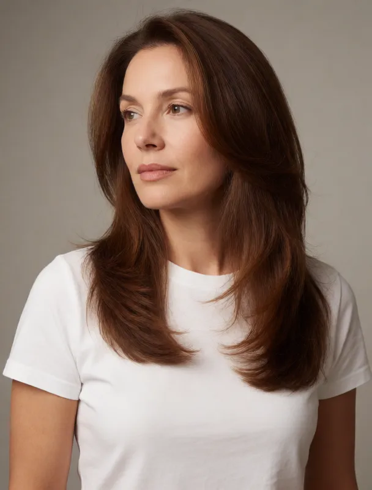
krea 2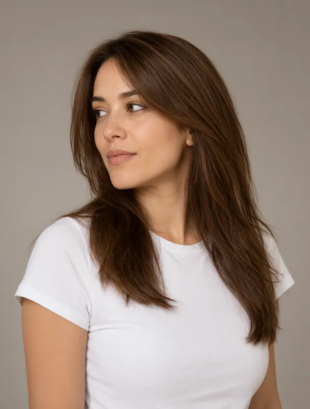
qwen image 2.1a full color studio portrait photograph in three-quarter view, framed from the shoulders up, lit by a soft diffused key light against a plain warm gray backdrop. the subject is a mixed race woman aged 30 with light skin. her hair is chestnut brown, long blowout layers. she wears a plain white crew-neck t-shirt. she is turned three quarters toward the left side of the frame and gazes off to the left side of the frame, away from the camera.
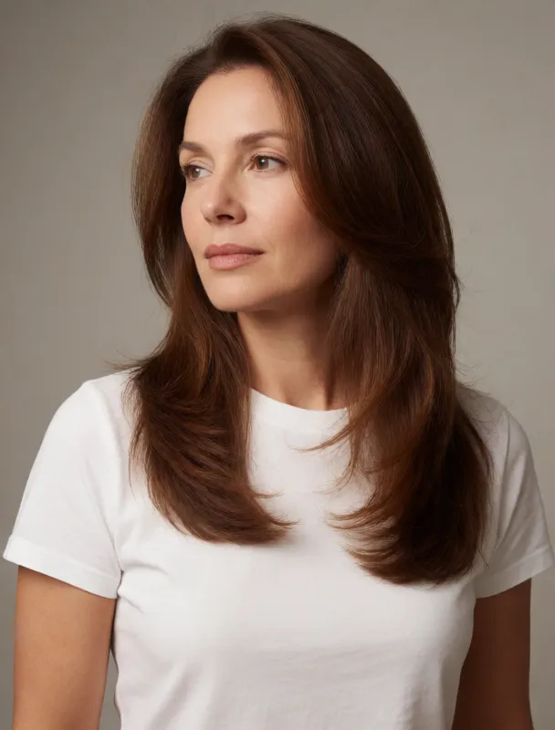
krea 2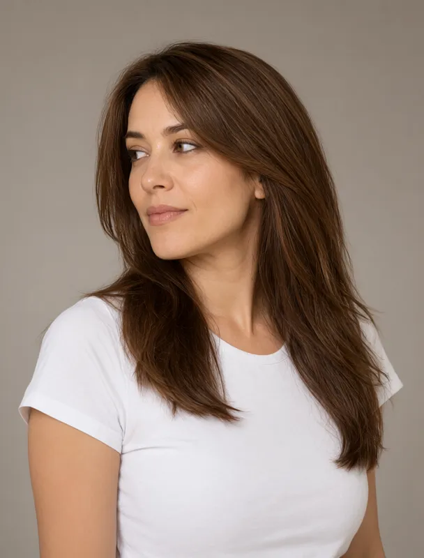
qwen image 2.1a full color studio portrait photograph in three-quarter view, framed from the shoulders up, lit by a soft diffused key light against a plain warm gray backdrop. the subject is a mixed race woman aged 35 with light skin. her hair is chestnut brown, long blowout layers. she wears a plain white crew-neck t-shirt. she is turned three quarters toward the left side of the frame and gazes off to the left side of the frame, away from the camera.
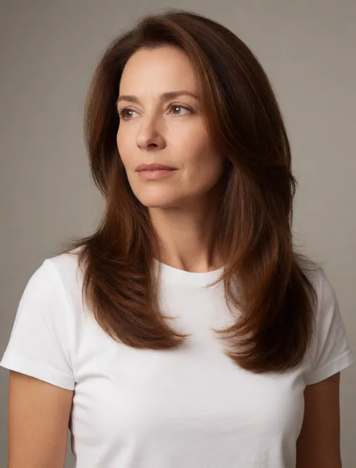
krea 2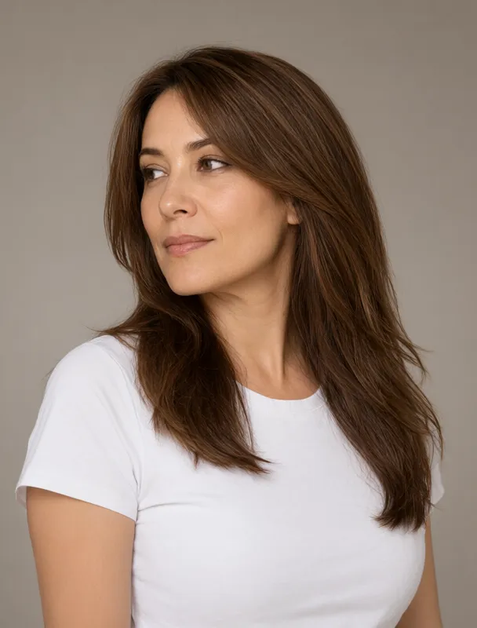
qwen image 2.1a full color studio portrait photograph in three-quarter view, framed from the shoulders up, lit by a soft diffused key light against a plain warm gray backdrop. the subject is a mixed race woman aged 40 with light skin. her hair is chestnut brown, long blowout layers. she wears a plain white crew-neck t-shirt. she is turned three quarters toward the left side of the frame and gazes off to the left side of the frame, away from the camera.
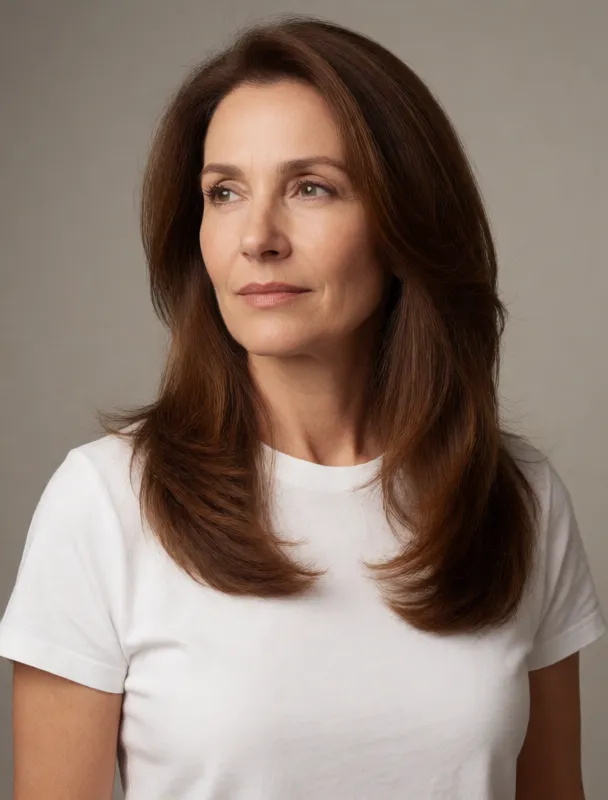
krea 2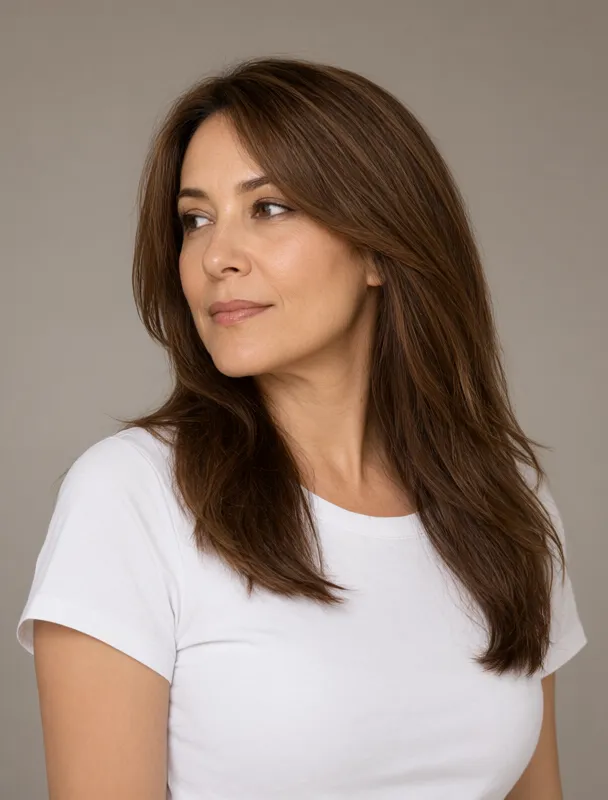
qwen image 2.1a full color studio portrait photograph in three-quarter view, framed from the shoulders up, lit by a soft diffused key light against a plain warm gray backdrop. the subject is a mixed race woman aged 45 with light skin. her hair is chestnut brown, long blowout layers. she wears a plain white crew-neck t-shirt. she is turned three quarters toward the left side of the frame and gazes off to the left side of the frame, away from the camera.
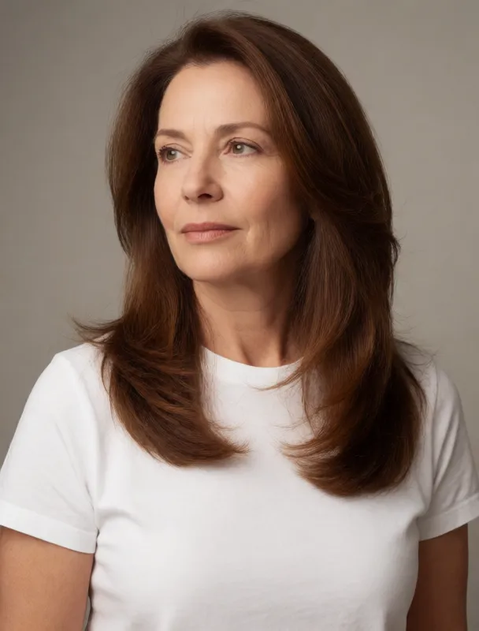
krea 2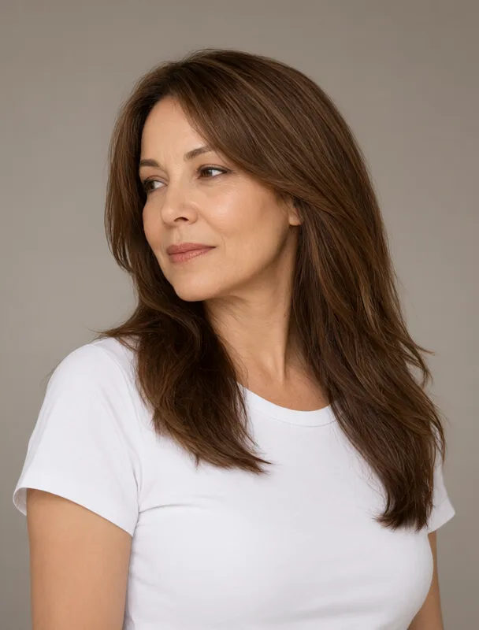
qwen image 2.1a full color studio portrait photograph in three-quarter view, framed from the shoulders up, lit by a soft diffused key light against a plain warm gray backdrop. the subject is a mixed race woman aged 50 with light skin. her hair is chestnut brown, long blowout layers. she wears a plain white crew-neck t-shirt. she is turned three quarters toward the left side of the frame and gazes off to the left side of the frame, away from the camera.
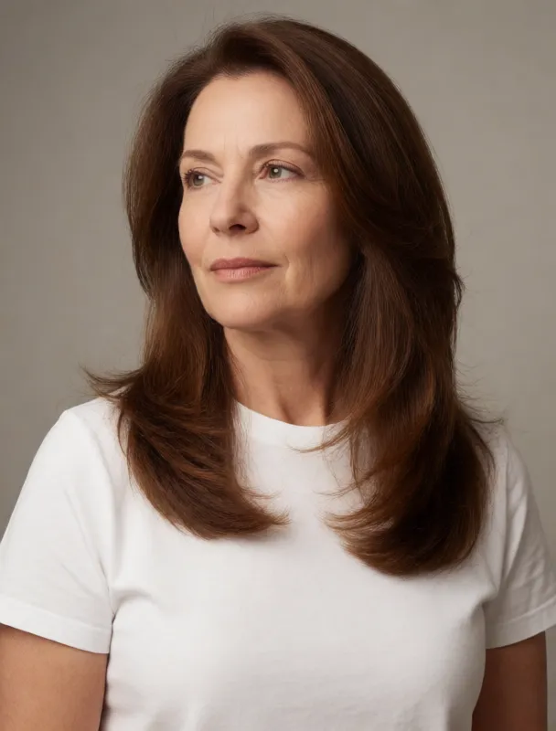
krea 2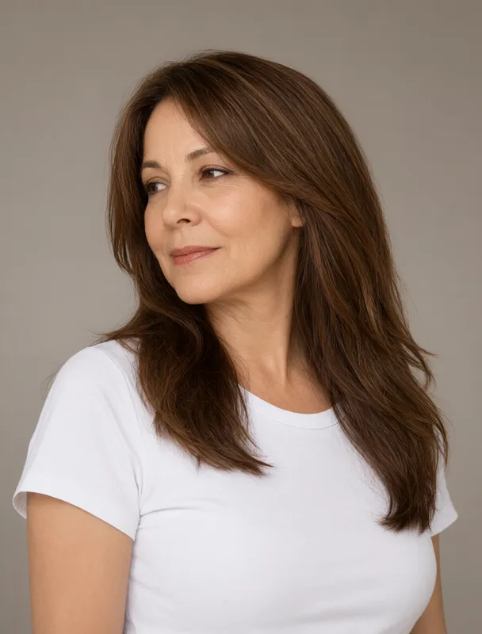
qwen image 2.1a full color studio portrait photograph in three-quarter view, framed from the shoulders up, lit by a soft diffused key light against a plain warm gray backdrop. the subject is a mixed race woman aged 55 with light skin. her hair is chestnut brown, long blowout layers. she wears a plain white crew-neck t-shirt. she is turned three quarters toward the left side of the frame and gazes off to the left side of the frame, away from the camera.
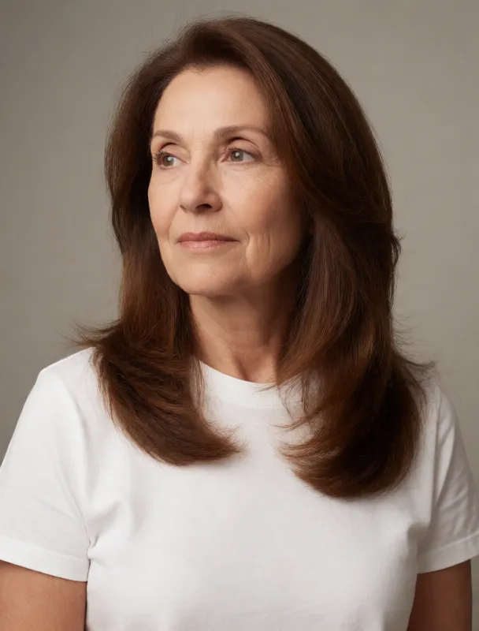
krea 2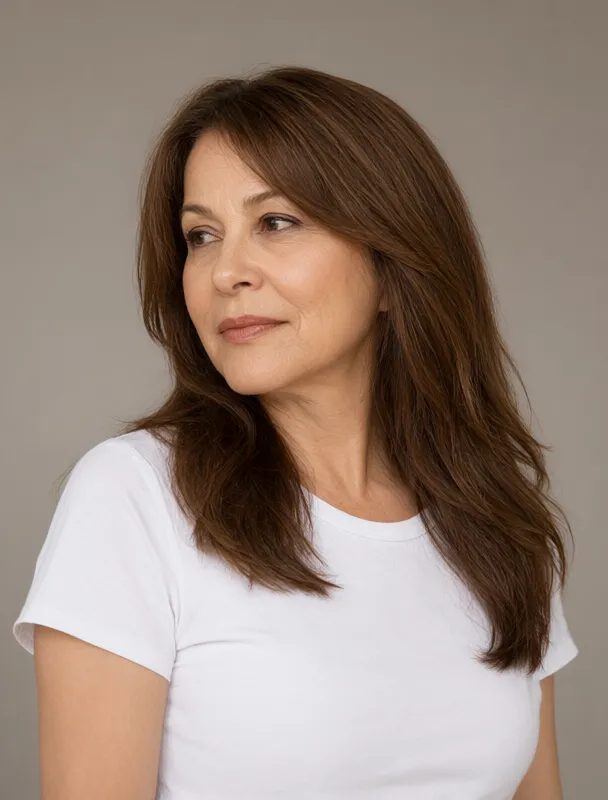
qwen image 2.1a full color studio portrait photograph in three-quarter view, framed from the shoulders up, lit by a soft diffused key light against a plain warm gray backdrop. the subject is a mixed race woman aged 60 with light skin. her hair is chestnut brown, long blowout layers. she wears a plain white crew-neck t-shirt. she is turned three quarters toward the left side of the frame and gazes off to the left side of the frame, away from the camera.